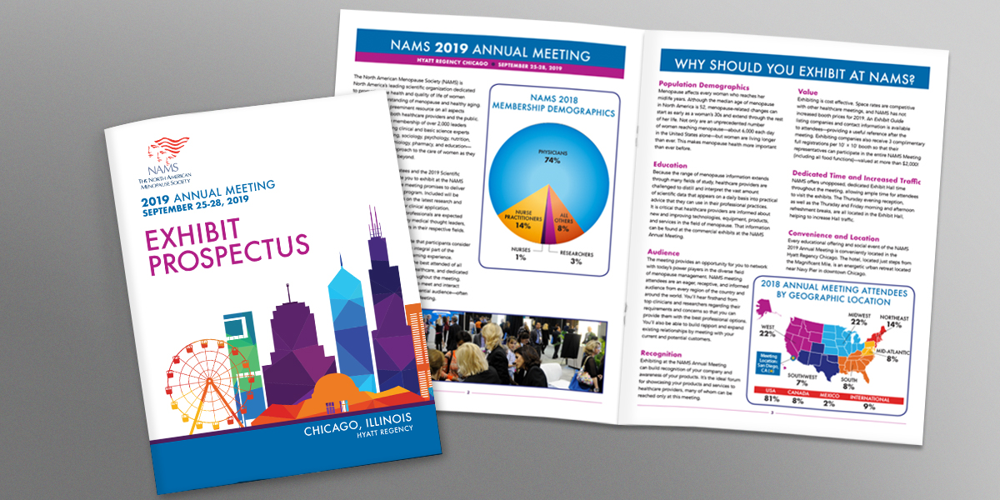
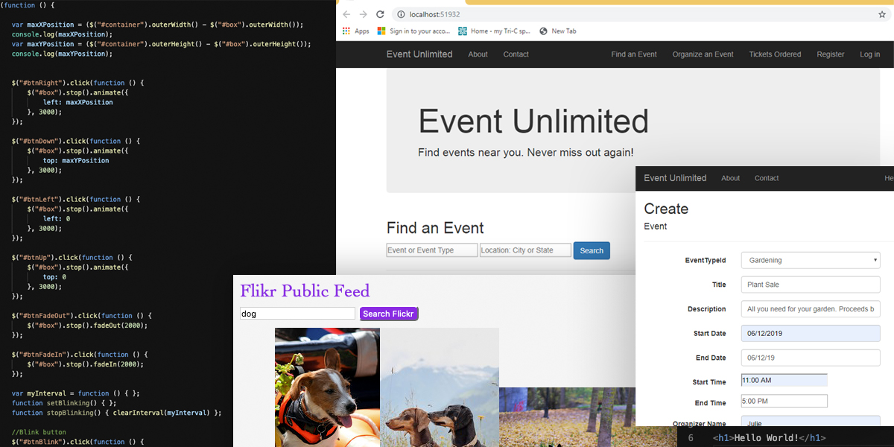
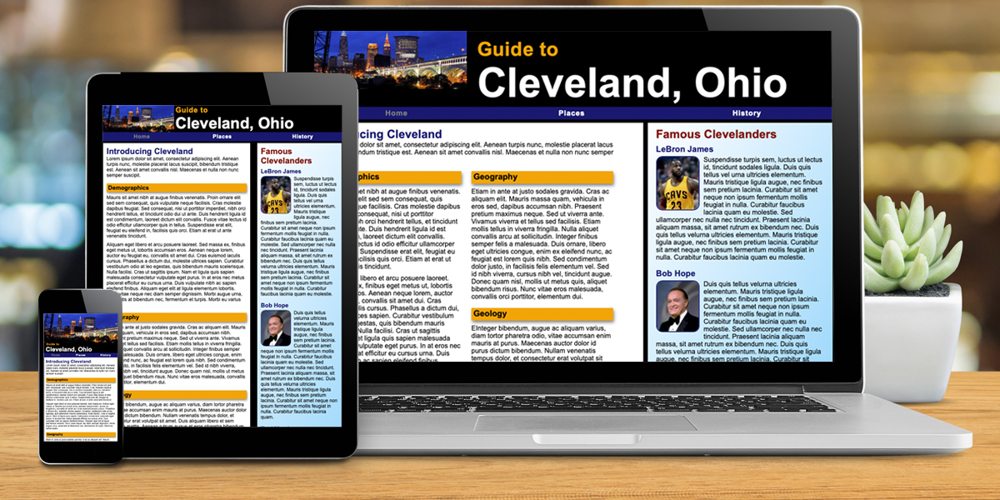
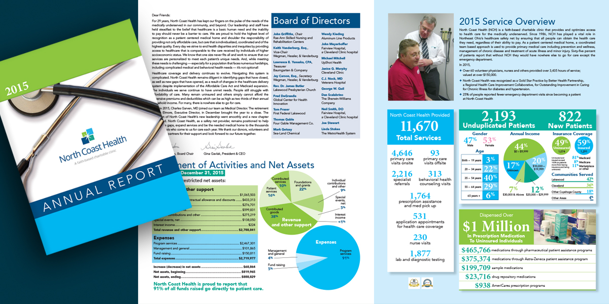
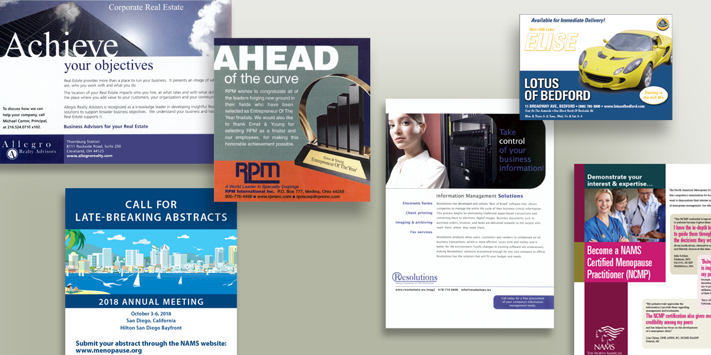
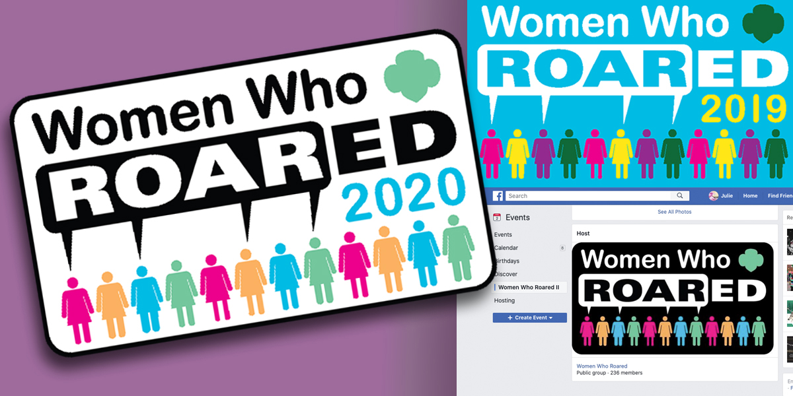

Greetings! I design projects to help organizations
communicate their messages. Thanks for checking out my work.

NAMS Exhibit Prospectus
This prospectus is one of the pieces designed to promote a medical society's annual meeting. Bold colors and plentiful graphics provide visual interest throughout the booklet. Cover art highlights the location for the meeting.

Web Application Development
The Events Unlimited application showcases my recently acquired full-stack development skills. It was built using ASP.NET MVC, and it allows authenticated users to create, search for, or buy tickets for upcoming events.

Responsive Web Design
This site adapts to the available screen space and exemplifies my understanding of HTML and CSS.

North Coast Health Annual Report
Infographics clearly conveyed large amounts of information in this annual report, and plenty of patient photos kept the charitable organization's mission in clear focus.

Advertising
I worked on many of these ads while I was on the staff of Smart Business magazine, where I enjoyed working with a wide variety of clients.

Women Who Roared Logo Design
Designed for a local Girl Scout event, this logo conforms to brand standards, but still provided a fresh look for a newly created event.